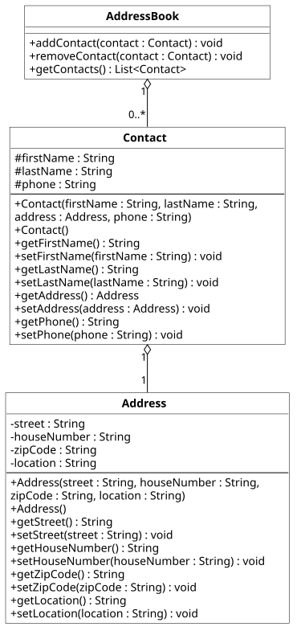

Praktikum 10: Datenstrukturen
In diesem Praktikum wollen wir den Einsatz von Datenstrukturen praktisch in Java unter Nutzung der IDE IntelliJ IDEA üben.
🚀 Lernziele
Sie können:
- geeignete Datenstrukturen für Problemstellungen auswählen
- sicher mit Maps und Sets in Java umgehen
- erste Projekte in der IDE IntelliJ enwickeln
🤔 Vorbereitung
Installieren Sie sich nach Möglichkeit gern schon einmal die Entwicklungsumgebung (IDE) IntelliJ IDEA:
Hinweise:
- Lizenz: Die Software kann in der einfachen Version auch nach 30 Tagen weiter verwendet werden. Sie brauchen keine Lizenz für die Ultimate-Version.
- Eigener Computer: Wenn Sie keinen eigenen Computer haben oder die Software nicht auf Ihrem privaten Computer installieren wollen, ist das kein Problem. Wir haben die Software auf den Rechnern in den PC-Laboren installiert. Im 24h-Raum (auch in G3 Etage 1) können Sie die Software auch außerhalb der Praktikumszeiten nutzen. Sprechen Sie die Lehrbeauftragten bei Interesse gern an.
- Klausur: Wir werden die IDE IntelliJ in den nächsten Wochen nutzen, um Sie noch näher an Java zu bringen. Bedenken Sie aber bitte, dass die Klausur wieder mit JOE durchgeführt wird. Üben Sie daher auch in dieser Umgebung regelmäßig, um fit zu bleiben!
- KI-Features: Im eigenen Interesse (Klausur und weiterführende Module) bitten wir Sie, alle KI-Features abzuschalten. Diese sollte man erst nutzen, wenn man gut programmieren kann! Die Lehrbeauftragten/Tutor:innen helfen Ihnen sehr gern dabei.
Bringen Sie bitte Ihre Implementierungen der Klassen Person und Address aus Praktikum 2 mit.
📝 Pflichtaufgaben (1 Bonuspunkt)
1 - Projekt in IntelliJ anlegen
Bearbeiten Sie bitte die folgenden Teilaufgaben in IntelliJ. Bitten Sie die Lehrbeauftragten/Tutor:innen im Praktikum gern um Hilfe.
Teilaufgaben:
- Öffnen Sie bitte die IDE IntelliJ.
- Legen Sie bitte ein neues (leeres) Projekt in IntelliJ an.
- Legen Sie eine Main.java an.
- Legen Sie eine Main-Klasse sowie eine main-Methode in Main.java an (siehe: Vorlesung).
- Geben Sie "Hello World" aus und starten Sie Ihr Projekt.
2 - Vorbereitung des AddressBook

Wir haben vor einigen Wochen bereits eine Person-Klasse implementiert (siehe Praktikum 2). Diese wollen wir jetzt weiter nutzen, aber unter dem Klassennamen Contact.
Anforderungen:
- Person zu Contact: Passen Sie Ihre Klasse Person so an, dass diese nun Contact heißt (inkl. Konstruktoren usw.).
- Address einbinden : Nutzen Sie bitte auch Ihre Klasse Address für Adressen von Kontakten.
- Klassendiagramm umsetzen: Setzen Sie bitte das oben dargestellte Klassendiagramm um.
- Kontakte als Liste: Speichern Sie die Kontakte im AddressBook bitte in einer Liste ab.
3 - Weiterentwicklung des AddressBook
Wir haben nun eine erste Implementierung unseres AddressBook. Diese hat aber noch ein paar Einschränkungen: Wenn wir einen Kontakt anlegen, der bereits existiert, wird das leider nicht erkannt. Dadurch können aktuell Duplikate entstehen. Überlegen Sie sich ein Konzept, wie Sie das verhindern können. Nutzen Sie dafür bitte möglichst eine elegante Variante durch geeignete Datenstrukturen (siehe: Vorlesung Datenstrukturen). Diskutieren Sie Ihre Lösung bitte mit den Lehrbeauftragten!
⭐ Zusatzaufgaben (1 Bonuspunkt)
Hinweis: Sie bekommen einen Bonuspunkt für eine Zusatzaufgabe.4 - Suche von Kontakten
Bitte eränzen Sie der Klasse AddressBook eine Methode searchContacts, die als Parameter einen query-String bekommt. Die Suche soll alle Daten des Addressbuchs durchsuchen und auch Ergebnisse zeigen, wenn Groß-/Kleinschreibung nicht übereinstimmen oder nur ein Teil übereinstimmt. Sie können dafür gern eine lineare Suche implementieren.
5 - Wörterbuch
Implementieren Sie mit Hilfe einer Map eine Wörterbuch für die Übersetzung Deutsch -> Englisch und Englisch -> Deutsch. Achten Sie bitte darauf, dass Groß-/Kleinschreibung nicht zwingend übereinstimmen müssen. Legen Sie bitte mind. 10 Wörter mit Übersetzungen an. Lesen Sie Nutzereingaben bitte über die Kommandozeile ein und geben Sie entweder eine passende Übersetzung oder einen Fehler aus.